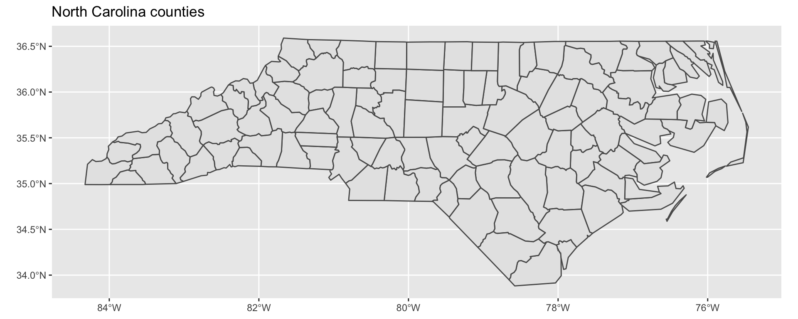
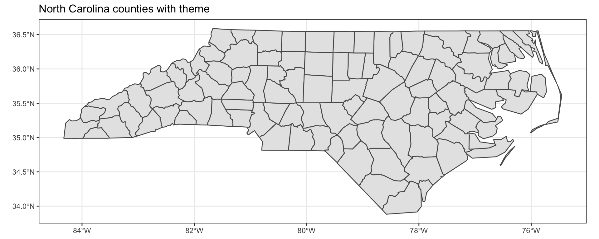
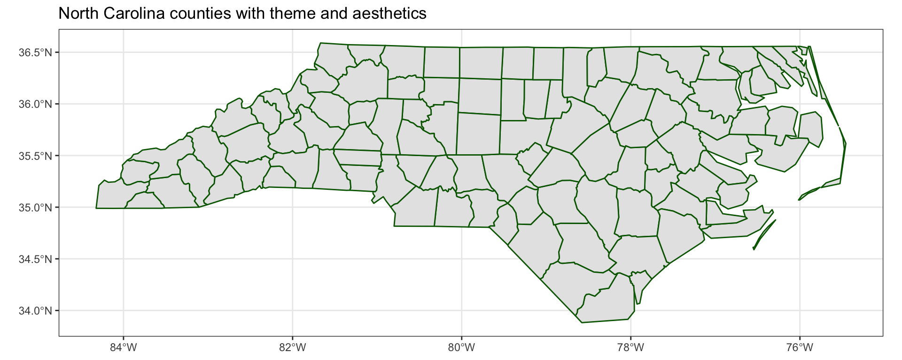
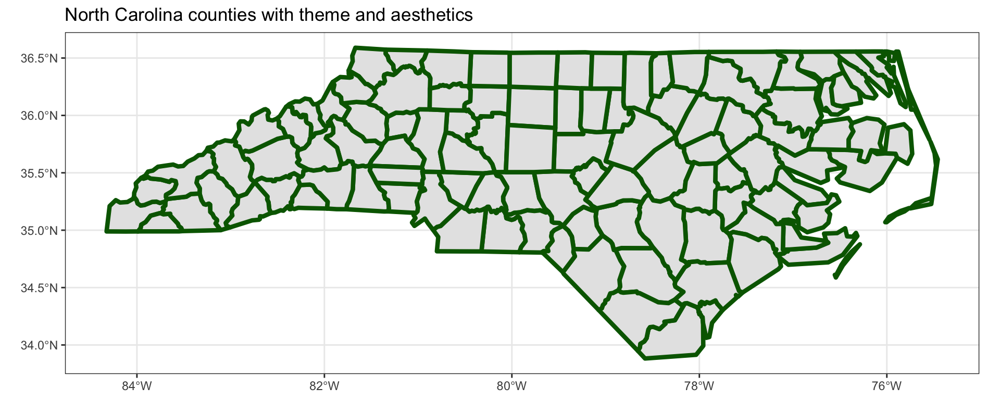
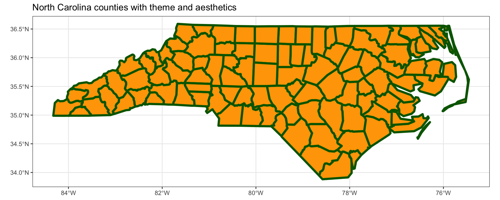
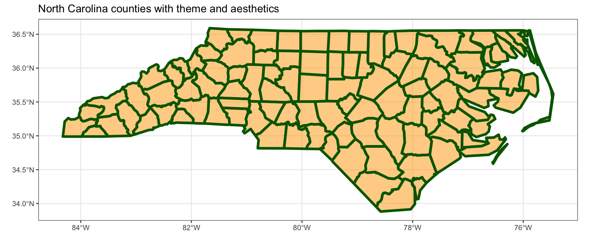
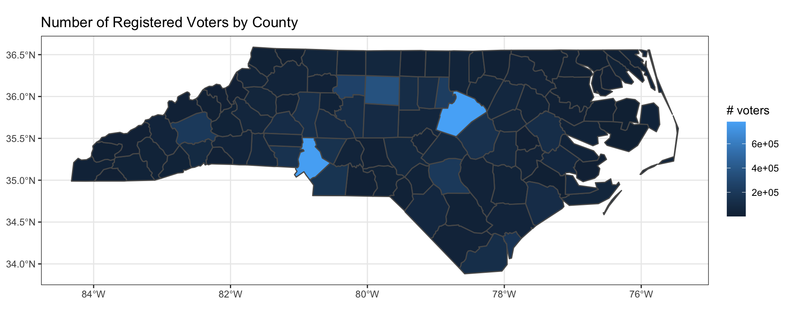
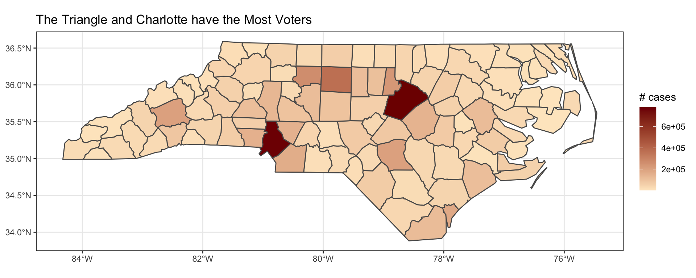

library(tidyverse)
library(sf)Spatial data
STA 199
Bulletin
Getting started
Clone your ae8-username repo from the GitHub organization.
Today
By the end of today you will…
- understand spatial data frame structure
- be able to create a visualization from a spatial data frame
Load packages
Notes
Spatial data is different.
Our typical “tidy” dataframe.
mpg# A tibble: 234 × 11
manufacturer model displ year cyl trans drv cty hwy fl class
<chr> <chr> <dbl> <int> <int> <chr> <chr> <int> <int> <chr> <chr>
1 audi a4 1.8 1999 4 auto… f 18 29 p comp…
2 audi a4 1.8 1999 4 manu… f 21 29 p comp…
3 audi a4 2 2008 4 manu… f 20 31 p comp…
4 audi a4 2 2008 4 auto… f 21 30 p comp…
5 audi a4 2.8 1999 6 auto… f 16 26 p comp…
6 audi a4 2.8 1999 6 manu… f 18 26 p comp…
7 audi a4 3.1 2008 6 auto… f 18 27 p comp…
8 audi a4 quattro 1.8 1999 4 manu… 4 18 26 p comp…
9 audi a4 quattro 1.8 1999 4 auto… 4 16 25 p comp…
10 audi a4 quattro 2 2008 4 manu… 4 20 28 p comp…
# … with 224 more rowsA new simple feature object.
nc <- st_read("data/nc_regvoters.shp", quiet = TRUE)
ncSimple feature collection with 100 features and 8 fields
Geometry type: MULTIPOLYGON
Dimension: XY
Bounding box: xmin: -84.32385 ymin: 33.88199 xmax: -75.45698 ymax: 36.58965
Geodetic CRS: NAD27
First 10 features:
county dem rep lib unaf male female total
1 ALAMANCE 38209 35967 670 35196 44651 54529 110042
2 ALEXANDER 4772 11750 123 7967 10947 11768 24612
3 ALLEGHANY 2030 3005 33 2466 3319 3548 7534
4 ANSON 9130 2858 38 3599 5800 6980 15625
5 ASHE 4261 8804 102 6232 8609 9525 19399
6 AVERY 1343 6994 55 3673 5283 5829 12065
7 BEAUFORT 10883 11873 124 9426 13591 16127 32306
8 BERTIE 8178 1629 36 2835 5310 6610 12678
9 BLADEN 9847 5005 77 6784 9472 11227 21713
10 BRUNSWICK 26797 46557 618 42602 48199 55644 116574
geometry
1 MULTIPOLYGON (((-79.24619 3...
2 MULTIPOLYGON (((-81.10889 3...
3 MULTIPOLYGON (((-81.23989 3...
4 MULTIPOLYGON (((-79.91995 3...
5 MULTIPOLYGON (((-81.47276 3...
6 MULTIPOLYGON (((-81.94135 3...
7 MULTIPOLYGON (((-77.10377 3...
8 MULTIPOLYGON (((-76.78307 3...
9 MULTIPOLYGON (((-78.2615 34...
10 MULTIPOLYGON (((-78.65572 3...Exercise 1
What differences do you observe when comparing a typical tidy data frame to the new simple feature object?
Simple features
A simple feature is a standard, formal way to describe how real-world spatial objects (country, building, tree, road, etc) can be represented by a computer.
The package sf implements simple features and other spatial functionality using tidy principles. Simple features have a geometry type. Common choices are shown in the slides associated with today’s lecture.
Simple features are stored in a data frame, with the geographic information in a column called geometry. Simple features can contain both spatial and non-spatial data.
All functions in the sf package helpfully begin st_.
sf and ggplot
To read simple features from a file or database use the function st_read().
nc <- st_read("data/nc_regvoters.shp", quiet = TRUE)Notice nc contains both spatial and nonspatial information.
We can build up a visualization layer-by-layer beginning with ggplot. Let’s start by making a basic plot of North Carolina counties.
nc |>
ggplot() +
geom_sf() +
labs(title = "North Carolina counties")
Now adjust the theme with theme_bw().
ggplot(nc) +
geom_sf() +
labs(title = "North Carolina counties with theme") +
theme_bw()
Now adjust color in geom_sf to change the color of the county borders.
ggplot(nc) +
geom_sf(color = "darkgreen") +
labs(title = "North Carolina counties with theme and aesthetics") +
theme_bw() 
Then increase the width of the county borders using size.
ggplot(nc) +
geom_sf(color = "darkgreen", size = 1.5) +
labs(title = "North Carolina counties with theme and aesthetics") +
theme_bw()
Fill the counties by specifying a fill argument.
ggplot(nc) +
geom_sf(color = "darkgreen", size = 1.5, fill = "orange") +
labs(title = "North Carolina counties with theme and aesthetics") +
theme_bw()
Finally, adjust the transparency using alpha.
ggplot(nc) +
geom_sf(color = "darkgreen", size = 1.5, fill = "orange", alpha = 0.50) +
labs(title = "North Carolina counties with theme and aesthetics") +
theme_bw()
North Carolina Registered Voters
The nc data was obtained from the NC Board of Elections website and contains statistics on NC registered voters as of September 4, 2021.
The data set contains the following variables on all North Carolina counties, categories provided by the NCSBE:
county: county namedem: total number registered Democratsrep: total number registered Republicanslib: total number registered Libertariansunaf: total number unaffiliatedmale: total number male votersfemale: total number female voterstotal: total number of registered voters in countygeometry: geographic coordinates of the county
Let’s use the NCBSE data to generate a choropleth map of the number of registered voters by county.
ggplot(nc) +
geom_sf(aes(fill = total)) +
labs(title = "Number of Registered Voters by County",
fill = "# voters") +
theme_bw() 
It is sometimes helpful to pick diverging colors, colorbrewer2 can help.
One way to set fill colors is with scale_fill_gradient().
ggplot(nc) +
geom_sf(aes(fill = total)) +
scale_fill_gradient(low = "#fee8c8", high = "#7f0000") +
labs(title = "The Triangle and Charlotte have the Most Voters",
fill = "# cases") +
theme_bw() 
Challenges
Different types of data exist (raster and vector).
The coordinate reference system (CRS) matters.
Manipulating spatial data objects is similar, but not identical to manipulating data frames.
dplyr
sf objects plays nicely with our earlier data wrangling functions from dplyr.
Example
Maybe you are interested in the percentage of registered democrats/republicans in a county.
nc |>
mutate(pct_dem = dem / total,
pct_rep = rep / total) |>
select(pct_dem, pct_rep)Simple feature collection with 100 features and 2 fields
Geometry type: MULTIPOLYGON
Dimension: XY
Bounding box: xmin: -84.32385 ymin: 33.88199 xmax: -75.45698 ymax: 36.58965
Geodetic CRS: NAD27
First 10 features:
pct_dem pct_rep geometry
1 0.3472220 0.3268479 MULTIPOLYGON (((-79.24619 3...
2 0.1938892 0.4774094 MULTIPOLYGON (((-81.10889 3...
3 0.2694452 0.3988585 MULTIPOLYGON (((-81.23989 3...
4 0.5843200 0.1829120 MULTIPOLYGON (((-79.91995 3...
5 0.2196505 0.4538378 MULTIPOLYGON (((-81.47276 3...
6 0.1113137 0.5796933 MULTIPOLYGON (((-81.94135 3...
7 0.3368724 0.3675169 MULTIPOLYGON (((-77.10377 3...
8 0.6450544 0.1284903 MULTIPOLYGON (((-76.78307 3...
9 0.4535071 0.2305071 MULTIPOLYGON (((-78.2615 34...
10 0.2298712 0.3993772 MULTIPOLYGON (((-78.65572 3...Geometries are “sticky”. They are kept until deliberately dropped using st_drop_geometry.
nc |>
select(county, total) |>
st_drop_geometry() county total
1 ALAMANCE 110042
2 ALEXANDER 24612
3 ALLEGHANY 7534
4 ANSON 15625
5 ASHE 19399
6 AVERY 12065
7 BEAUFORT 32306
8 BERTIE 12678
9 BLADEN 21713
10 BRUNSWICK 116574
11 BUNCOMBE 201401
12 BURKE 57481
13 CABARRUS 148489
14 CALDWELL 53537
15 CAMDEN 7646
16 CARTERET 52097
17 CASWELL 15195
18 CATAWBA 107060
19 CHATHAM 57602
20 CHEROKEE 22010
21 CHOWAN 9685
22 CLAY 9129
23 CLEVELAND 66186
24 COLUMBUS 35646
25 CRAVEN 68989
26 CUMBERLAND 201336
27 CURRITUCK 21189
28 DARE 30151
29 DAVIDSON 111819
30 DAVIE 31265
31 DUPLIN 30586
32 DURHAM 228967
33 EDGECOMBE 33798
34 FORSYTH 263103
35 FRANKLIN 47475
36 GASTON 150351
37 GATES 8050
38 GRAHAM 5944
39 GRANVILLE 39468
40 GREENE 10565
41 GUILFORD 366867
42 HALIFAX 36047
43 HARNETT 79170
44 HAYWOOD 45241
45 HENDERSON 85808
46 HERTFORD 14308
47 HOKE 32002
48 HYDE 3003
49 IREDELL 129972
50 JACKSON 28551
51 JOHNSTON 144074
52 JONES 6826
53 LEE 37792
54 LENOIR 35854
55 LINCOLN 63412
56 MACON 26868
57 MADISON 16636
58 MARTIN 15977
59 MCDOWELL 29049
60 MECKLENBURG 773683
61 MITCHELL 11004
62 MONTGOMERY 16821
63 MOORE 72611
64 NASH 66185
65 NEW HANOVER 172138
66 NORTHAMPTON 13139
67 ONSLOW 107577
68 ORANGE 105638
69 PAMLICO 9157
70 PASQUOTANK 27127
71 PENDER 45024
72 PERQUIMANS 9813
73 PERSON 27017
74 PITT 113718
75 POLK 15772
76 RANDOLPH 93805
77 RICHMOND 27216
78 ROBESON 69785
79 ROCKINGHAM 60497
80 ROWAN 95376
81 RUTHERFORD 45278
82 SAMPSON 37263
83 SCOTLAND 20153
84 STANLY 42752
85 STOKES 31547
86 SURRY 46850
87 SWAIN 9774
88 TRANSYLVANIA 25854
89 TYRRELL 2268
90 UNION 161006
91 VANCE 28412
92 WAKE 780519
93 WARREN 12940
94 WASHINGTON 8050
95 WATAUGA 43127
96 WAYNE 73786
97 WILKES 43527
98 WILSON 54424
99 YADKIN 24494
100 YANCEY 14197Exercise 2
- Construct an effective visualization investigating the per county percentage of unaffiliated voters in NC. Use
#f7fbffas “low” on the color gradient and#08306bas “high”. Which county has the highest percentage of unaffiliated voters? (You might want to use Google here.)
# code here- Write a brief research question that you could answer with this data set and then investigate it here.
# code here- What are limitations of your visualizations above?